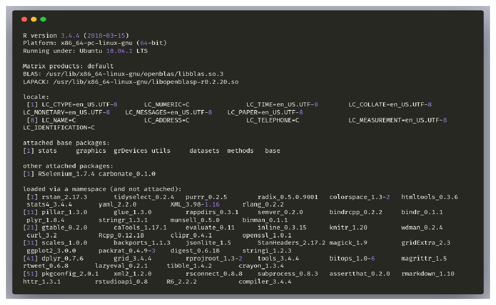

© Copyright 2018
Brian Muchmore
The transformations being applied to the data before analysis
Given the same data, the following commands should yield almost identical results to the results being shown with any discrepancies being stochastic in nature. Some of these commands, however, can take a long time to run, so while we show the commands here as we originally ran them, results are often being read back from file. If you are trying to recapitulate these results using the exact data and code being used here and are running into problems or incongruitous results, please submit an issue, and we will address it as soon as possible.
These are the packages I will be using.
library(tidyverse)
library(missRanger)
library(recipes)This is the session info.
sessionInfo()
All data analysis was done on a desktop with 8 cores/16 threads (AMD Ryzen 7 1800x) and 32 GB of DDR4 memory. We begin by setting a “cores” variable for future use.
cores <- 16This is a general purpose naming function that will be used to generate any paths seen below:
name <- function(path = "/home/brian/Desktop/flow", folder = "cases", file, type = "rds") {
paste0(path, "/", folder, "/", file, ".", type)
}Now we load the clinical data. The data was downloaded from tranSMART on December 5th, 2018.
data <- read_tsv(name(folder = "", file = "data_clinical", type = ".tsv"))The column names of the data are in a terrible format for R analysis, so we make them more amenable.
colnames(data) <- tolower(colnames(data))
colnames(data) <- gsub("[[:space:]]", "_", colnames(data))
colnames(data) <- gsub("\\", "_", colnames(data), fixed = TRUE)
colnames(data) <- gsub("_$", "", colnames(data))
colnames(data) <- gsub("^_", "", colnames(data))
colnames(data) <- gsub("cross_sectional_low_dimensional_data_", "", colnames(data))
colnames(data) <- gsub("\\(", "", colnames(data))
colnames(data) <- gsub("\\)", "", colnames(data))
colnames(data) <- gsub("\\'", "", colnames(data))
colnames(data) <- gsub(">=", "greater_equal", colnames(data))
colnames(data) <- gsub("<=", "lesser_equal", colnames(data))
colnames(data) <- gsub("=", "equal", colnames(data))
colnames(data) <- gsub("==", "equal", colnames(data))
colnames(data) <- gsub("[[:punct:]]", "_", colnames(data))
colnames(data) <- gsub("^\\s+|\\s+$", "", colnames(data))The last step is to filter for case-only data and then toss the case/control column.
case_data <- data %>%
filter(clinical_diagnosis_arm == "Case") %>%
select(-clinical_diagnosis_arm)At this point, we will get rid of columns in the data like “patient_id”, which is guaranteed to be unique for every patient, and column categories like “substudies” that contain information for only a fraction of the entire data. This leaves us with pertinent clinical, HLA, expression, antibody and auto-antibody columns. We will use this data downstream as descriptor data to label (e.g. color code) our flow cytometry clusters, and also as the input data into supervised learning algorithms to see which features are driving our clusters.
clinical_filter_data <- case_data %>%
select(-contains("flow_cyto")) %>%
select(-contains("substudies")) %>%
select(-contains("metabolomics")) %>%
select(-contains("luminex")) %>%
select(
-clinical_consent_informed_consent_date_1,
-clinical_consent_cs_phase,
-clinical_diagnosis_arm_code,
-clinical_sampling_patient_id,
-clinical_sampling_omic_number,
-subject_id
)Now we will filter columns according to the percentage of missing data. In this case, we keep all columns with 10% or less missing data.
clinical_filter_data <- clinical_filter_data[, colMeans(is.na(clinical_filter_data)) <= 0.89]Next we remove columns with zero variance, and transform any character-type columns into factor-type columns.
vars <- colnames(clinical_filter_data)
roles <- rep("predictor", length(vars))
clinical_transformed_data <- clinical_filter_data %>%
recipe(vars = vars, roles = roles) %>%
step_zv(all_predictors()) %>%
prep() %>%
bake(newdata = clinical_filter_data) %>%
mutate_if(is.character, as.factor)We still have some missing data, so we will impute the remaining missing data in two steps: First we impute all of the factor data jointly.
clinical_factor_imputed_data <- clinical_transformed_data %>%
select_if(is.factor) %>%
missRanger(
maxiter = 10L,
pmm.k = 3,
seed = NULL,
num.trees = 1501,
num.threads = cores
)And, now we will impute the numeric data jointly.
clinical_numeric_imputed_data <- clinical_transformed_data %>%
select_if(is.numeric) %>%
missRanger(
maxiter = 10L,
pmm.k = 5,
seed = NULL,
num.trees = 1501,
num.threads = cores
)Finally, we recombine the two imputed data-sets for our final clinical data.
clinical_cases <- cbind(clinical_factor_imputed_data, clinical_numeric_imputed_data)Now we will manipulate the flow cytometry data to put it into a more ammenable form for data analysis. First, we split out the flow cytometry data from the general case-only data, and then we split out all the columns that refer to panel 1 and panel 2 because these are the only panels that were run for every patient in the study.
flow_data <- case_data %>%
select(contains("flow_cyto")) %>%
select(contains("p1"), contains("p2"))
colnames(flow_data) <- gsub("flow_cytometry_p1_", "", colnames(flow_data))
colnames(flow_data) <- gsub("flow_cytometry_p2_", "", colnames(flow_data))The data has very few missing values in it, but there are a few, so we impute those.
flow_imputed_data <- flow_data %>%
missRanger(
maxiter = 10L,
pmm.k = 3,
seed = NULL,
num.trees = 1501,
num.threads = cores
)Now we will transform the data. While the transformations done here were decided upon on a trial-and-error basis, we don’t believe that either individually or as a group they fundamentally change the results of downstream analyses.
vars <- colnames(flow_imputed_data)
roles <- rep("predictor", length(vars))
flow_cases <- flow_imputed_data %>%
recipe(vars = vars, roles = roles) %>%
step_zv(all_predictors()) %>%
step_YeoJohnson(all_predictors()) %>%
step_center(all_predictors()) %>%
step_scale(all_predictors()) %>%
prep() %>%
bake(newdata = flow_imputed_data)If you see mistakes or want to suggest changes, please create an issue on the source repository.
Text and figures are licensed under Creative Commons Attribution CC BY 4.0. Source code is available at https://github.com/bmuchmore/PreciseDist_Paper, unless otherwise noted. The figures that have been reused from other sources don't fall under this license and can be recognized by a note in their caption: "Figure from ...".
For attribution, please cite this work as
Muchmore (2018, Dec. 8). PreciseDist Paper: Data Set-Up. Retrieved from https://bmuchmore.github.io/PreciseDist_Paper/posts/data-setup/
BibTeX citation
@misc{muchmore2018data,
author = {Muchmore, Brian},
title = {PreciseDist Paper: Data Set-Up},
url = {https://bmuchmore.github.io/PreciseDist_Paper/posts/data-setup/},
year = {2018}
}
© Copyright 2018
Brian Muchmore